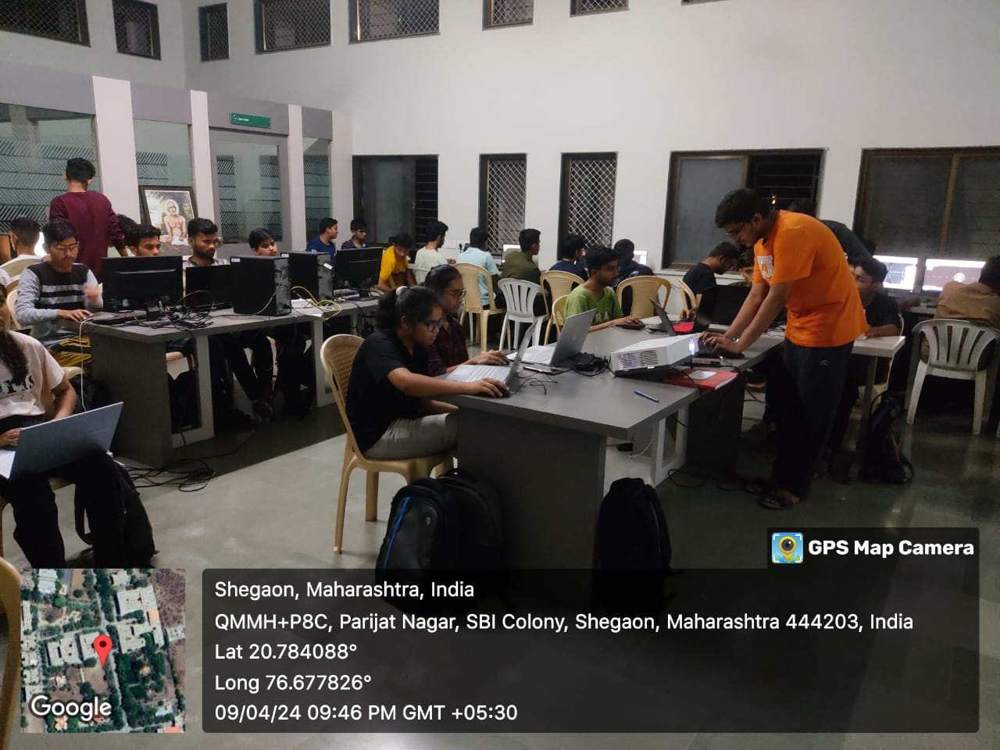

It's a comprehensive tool that combines design, engineering, and manufacturing into one platform, allowing
users to create, simulate, and fabricate 3D models and prototypes. Here are some key features and
capabilities of Fusion 360:
Day-1
On day one of using Autodesk Fusion 360 for 2D designing, we'll be likely start with the basics to familiarize ourself with the software's interface and fundamental tools. Here's a step-by-step guide to get you started:
1).Installation and Setup: Download and install Autodesk Fusion 360 on your computer. If you haven't already, create an Autodesk account or sign in to your existing account.
2).Launching Fusion 360: Open Fusion 360 and sign in with your Autodesk account credentials. You'll be greeted with the main dashboard where you can start a new design.
3).Creating a New Design: Click on the "New Design" button to create a new design workspace. Give your design a name and specify any units or other settings as needed.

Day-2
On day 2 we are starting from 2D designing click on create sketch button in the toolbar at the top of the screen.
and other some basic concepts in fusion 360 Sekecting the plane , Sketching tools, Dimensioning and constraining, Editing and modifying, Adding text and annotations, Saving your work.


Day-3
Great! Transitioning to 3D designing in Autodesk Fusion 360 opens up a whole new realm of possibilities. Here's a guide to help us get started with 3D design on day three:
1). Reviewing Basic Concepts: Before diving into 3D design, it's helpful to review some basic concepts such as extrusions, revolves, and sweeps. These operations are fundamental to creating 3D geometry in Fusion 360.
2).Creating a New Component: In Fusion 360, designs are organized into components. Start by creating a new component for your 3D model. Components help keep your design organized and facilitate assembly modeling.
3).Sketching in 3D: Unlike traditional 2D sketching, 3D sketching allows you to create geometry in three dimensions. You can sketch on planes, faces, or even create sketches that are not constrained to a specific plane.
4).Extruding: Extruding is the process of adding depth to a 2D sketch to create a 3D solid. After sketching your profile, use the extrude command to pull it in the desired direction and specify the extrusion distance.
5).Assembly Design: If your design involves multiple components or parts, start thinking about how they will fit together in an assembly. Fusion 360's assembly environment allows you to assemble, constrain, and simulate the motion of components.


Day-4
On day four of delving deeper into Autodesk Fusion 360 and 3D design, you might focus on more advanced features and techniques to enhance your skills. Here are some topics and areas you could explore:
- Advanced Sketching Techniques
- Multi-Body Modeling
- Parametric Design Strategies
- Surface Modeling
- Direct Modeling
- Sheet Metal Design
- Generative Design
- Simulation and Analysis
- Advanced Rendering and Visualization


Day-5
On day five, you focused on learning about motion in Autodesk Fusion 360, specifically how to apply joints to your 3D models and simulate their movement. Here's a guide to help you understand and utilize motion in Fusion 360.
1. Understanding Joints: In Fusion 360, joints are used to define relationships between components in an assembly and simulate their movement. Joints allow you to specify how components are connected and how they can move relative to each other.
2. Types of Joints: Fusion 360 offers several types of joints, each with its own specific behavior:
- Revolute Joint: Allows rotation around a fixed axis.
- Slider Joint: Allows linear movement along a fixed axis.
- Cylindrical Joint: Allows both rotational and linear movement.
- Ball Joint: Allows rotation around any axis.
- Planar Joint: Constrains movement to a specific plane.
- Rigid Joint: Fixes components in place, preventing movement.
- Pin Slot Joint: Allows rotation around a pin or sliding along a slot.